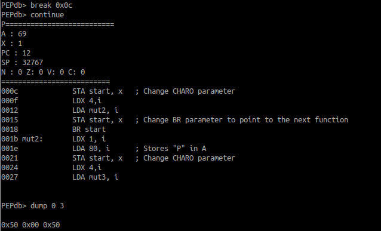

Rétro-débogueur pour PEP/8 avec support de code mutant
Présenté par :
Philippe Pépos Petitclerc
Frédéric Vachon
### Plan de la présentation
* Littérature sur les techniques de rétro-débogage
* PEP/8
* PEPdb
* Assembleur/Désassembleur/Interpréteur
* Rétro-débogage
* Support de code mutant
* Démo
#### Efficient Algorithms for Bidirectional Debugging (2000)
* Constat : un trap coûte environ un million de cycles au processeur
* Ajout d'appel de fonctions avec compteurs
* Réexécution du programme, parfois plus d'une fois
* Capture d'états pour appels systèmes
#### Instruction-level Execution for Debugging (2002)
* Construction du programme inverse
* Capture d'états uniquement pour les appels systèmes
#### An Efficient and Generic Reversible Debugger using the Virtual Machine based Approach (2005)
* Mode débogage/Mode réel
* Capture d'états à interval de temps dynamiquement ajusté selon un surcoût toléré
* Retour à la capture la plus proche et réexécution
### PEP/8
* Language d'assemblage éducatif
* 39 mnémoniques
* Seulement 4 instructions d'écriture en mémoire
```nasm
start: CHARO 'P', i
BR mut1
mut1: LDX 1, i
LDA 69, i ; Store "E" in A
STA start, x ; Change CHARO parameter
LDX 4,i
LDA mut2, i
STA start, x ; Change BR parameter
BR start
```
### Composantes
* Assembleur
* Désassembleur
* Interpréteur
* Rétro-débogueur avec support de code mutant
### Rétro-débogueur
* Capture de 3 types de log
* Instruction de base
* Registres avant exécution
* Instruction avec modification de mémoire déterministe
* Registres avant exécution
* Adresse affectée
* Données avant
* Instruction avec modification de mémoire indéterministe
* Registres avant et après exécution
* Adresse affectée
* Données avant et après
### Rétro-débogueur
* Navigation à reculons en restaurant les états
* Réexécution des instructions
* Sauf pour écritures indéterministes
### Support de code mutant
* Problème : Quand peut-on faire confiance au source ?
* Objectif : Utiliser les informations du source autant que possible
* Comparaison de l'instruction du source avec l'instruction décodé en mémoire
* En cas de modification, on utilise le désassembleur
Mémoire avant la modification

Mémoire après la modification